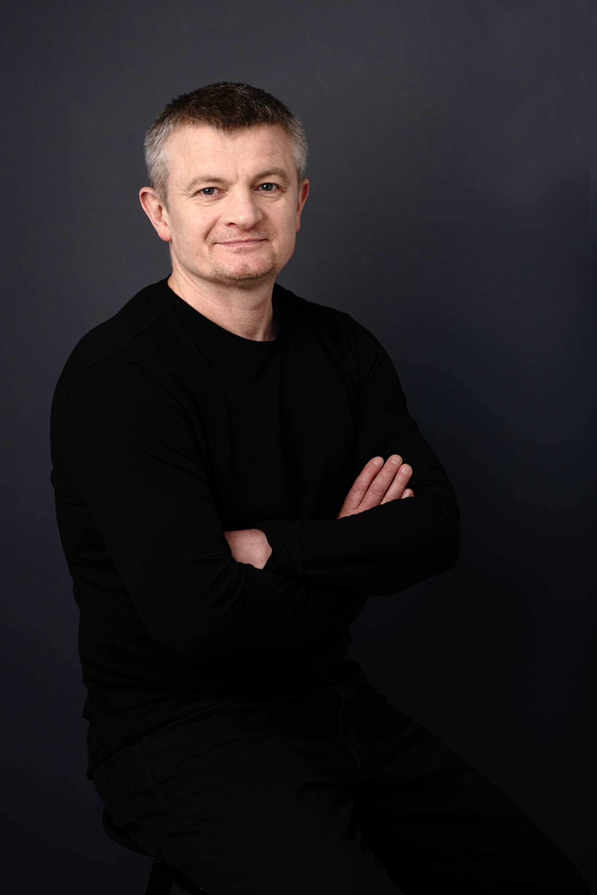

"Nie urodziłem się mistrzem – stałem się nim."
Słowa moich uczniów
>"Piotr to nie tylko trener, to mentor, który zmienia życie."
- Marek, zawodnik"Dzięki Piotrowi uwierzyłem w siebie i swoje możliwości."
- Anna, uczennica"Jego podejście do treningu jest wyjątkowe i inspirujące."
- Tomasz, mistrz Polski
Poza ringiem
Kickboxing to moja pasja, ale poza treningami jestem również mężem i ojcem. Wierzę, że równowaga między życiem zawodowym a osobistym jest kluczem do sukcesu.